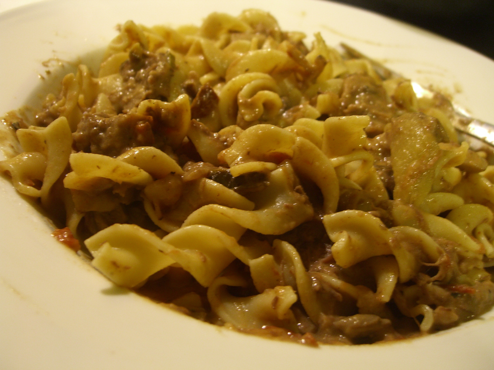

Home
Budget Beed Stroganoff

Description
A delicious, cheap, and easy way to make a classic dish of beef stroganoff.
Ingredients
- 1 lb. Ground Beef
- Egg Noodles
- 1/4 Onion
- 1 Can Gravy
- 1 Can Portabella Mushrooms (Optional)
Steps
- Start by bringing water to a boil in a medium pot.
- While you wait for the water to boil, chop up one quarter onion.
- Add ground beef, onion, and mushrooms to a skillet and cook on medium heat until meat is brown.
- Once the water is boiling, add noodles.
- Add the can of gravy to the skillet once the meat is brown.
- After the noodles are done cooking, drain the water and portion into bowls or plates.
- Add the meat and gravy mixture on top of the noodles.
- Enjoy!